Jetaprint · Gráfica multimídia
Do seu arquivo ao impresso, do jeito que você pensou.
Cartões, blocos, agendas, catálogos, embalagens e grande formato. Cada peça passa pelas mesmas quatro tintas e pelo mesmo cuidado.
Todo impresso começa assim: com cada cor no lugar.
Antes da máquina
Sua ideia vira um arquivo que a máquina entende.
Tela mostra luz. Papel mostra tinta. Por isso um arquivo de impressão segue regras próprias, e é nelas que um impresso acerta ou erra a cor, o corte e a nitidez.
- Modo de corCMYK
- Resolução das imagens300 dpi
- Sangria3 mm por lado
- Margem de segurança5 mm
- Fontesconvertidas em curvas
Na impressão
Quatro tintas. Uma imagem.
Toda cor que você vê num impresso nasce de quatro chapas, uma por tinta. Cada uma precisa cair exatamente sobre as outras.
- C · Ciano
- M · Magenta
- Y · Amarelo
- K · Preto
Registro perfeito.
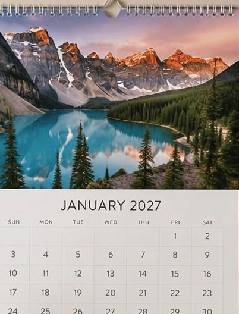

Depois da tinta
O acabamento termina o que a tinta começou.
Encadernação, espiral, dobra e montagem. É aqui que a folha impressa vira o objeto que você vai entregar na mão de alguém.
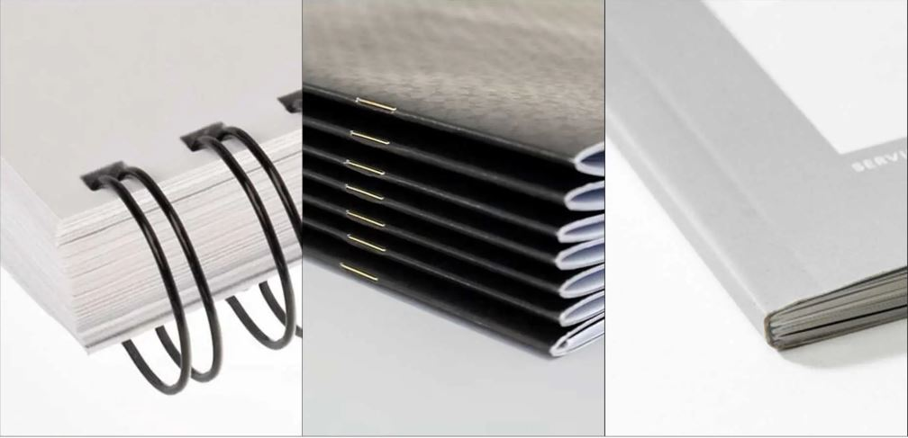
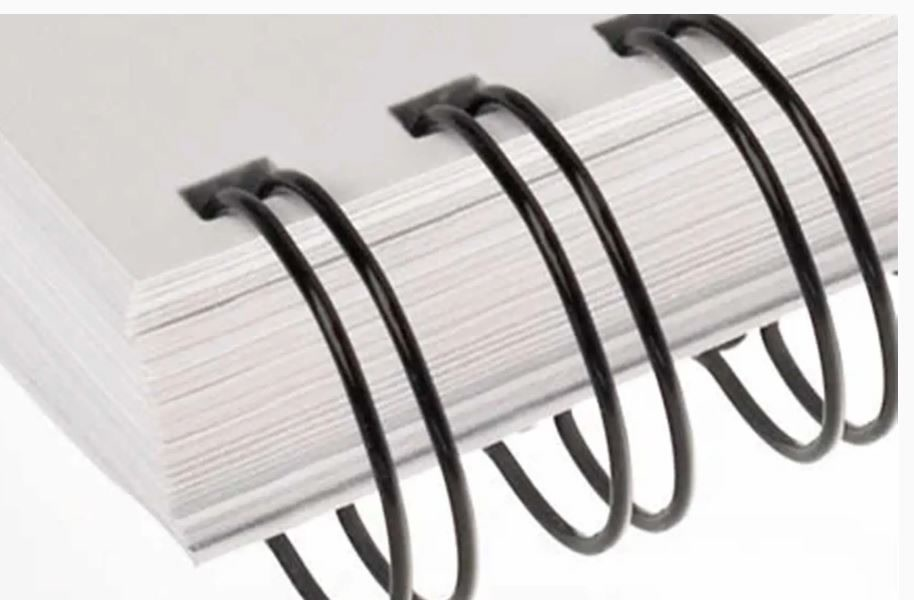
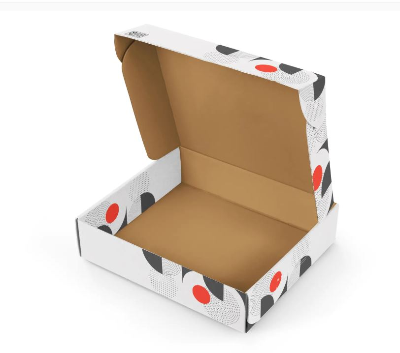
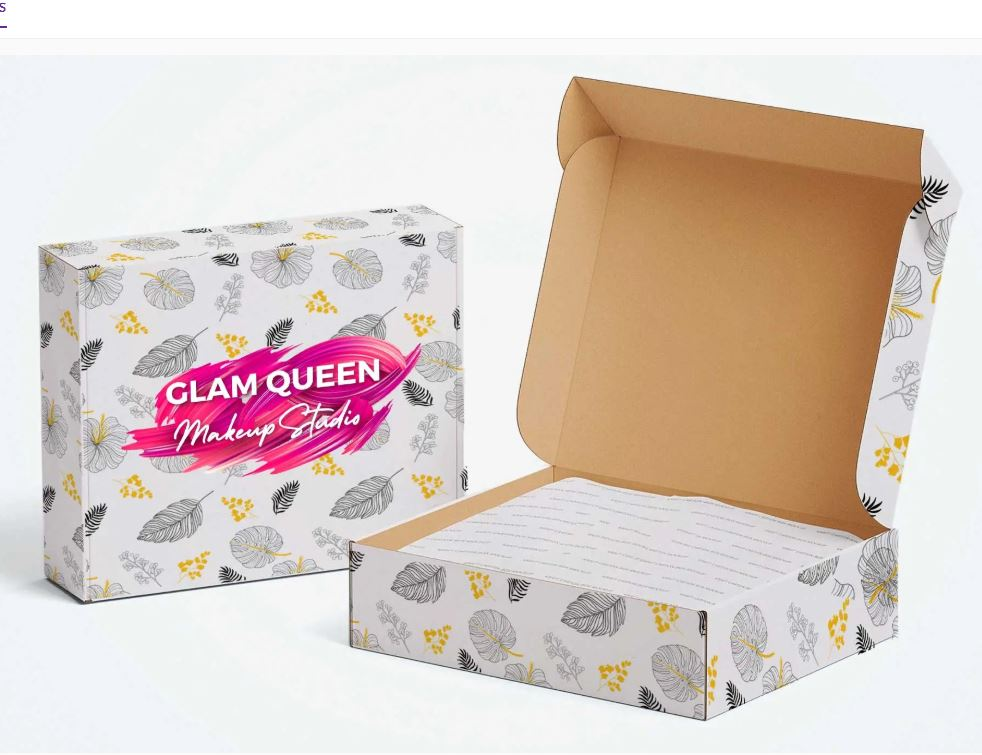
Pronto pra você.
Do cartão que cabe no bolso ao banner que cobre a parede.
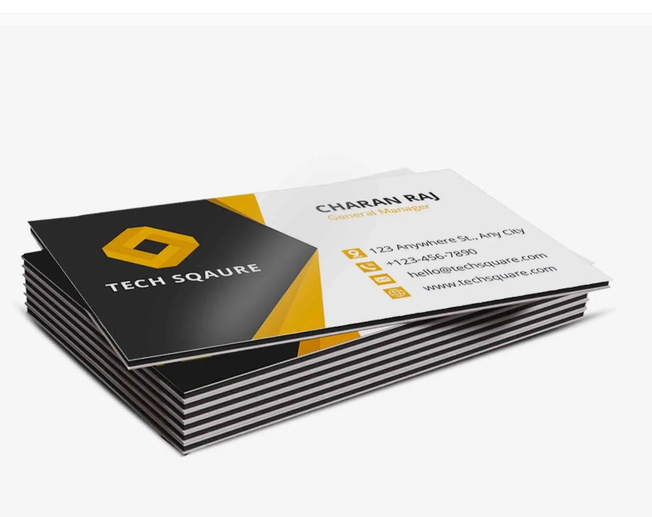
Cartões de visita
01Blocos e receituários
02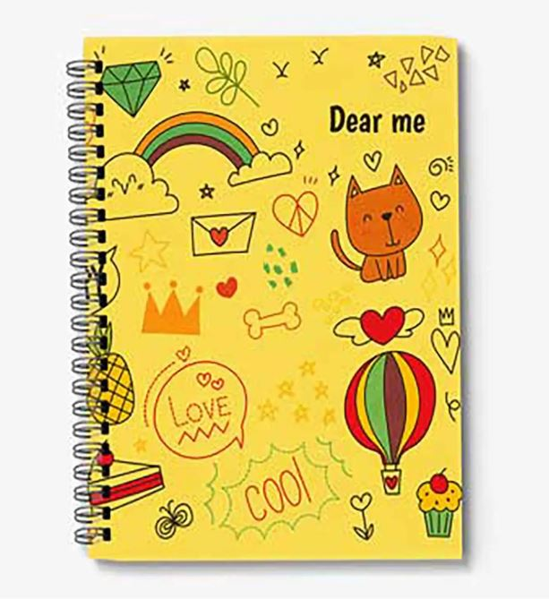
Agendas
03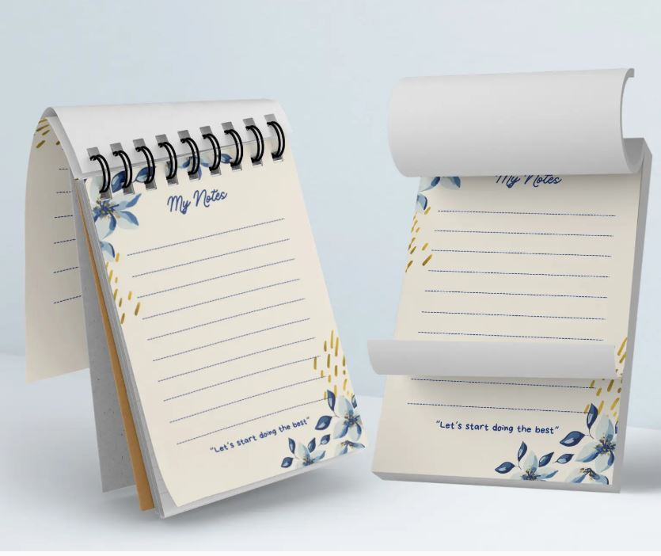
Cadernetas
04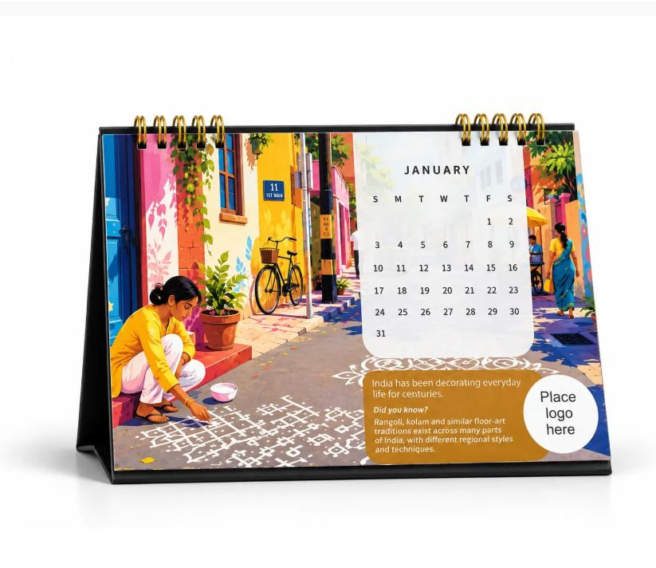
Calendários
05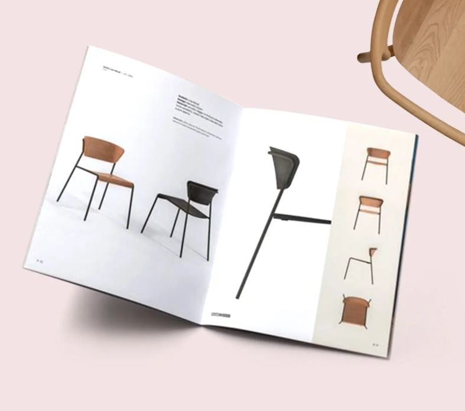
Catálogos e revistas
06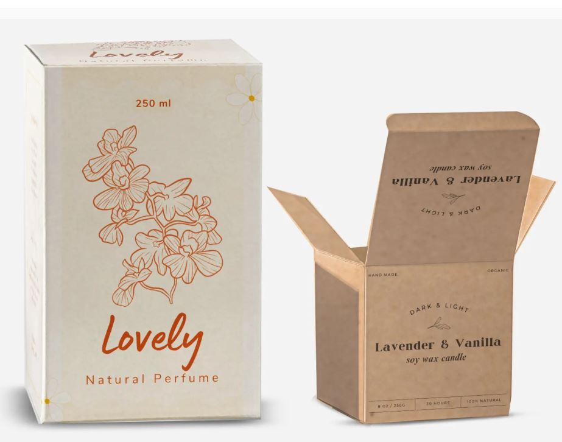
Embalagens
07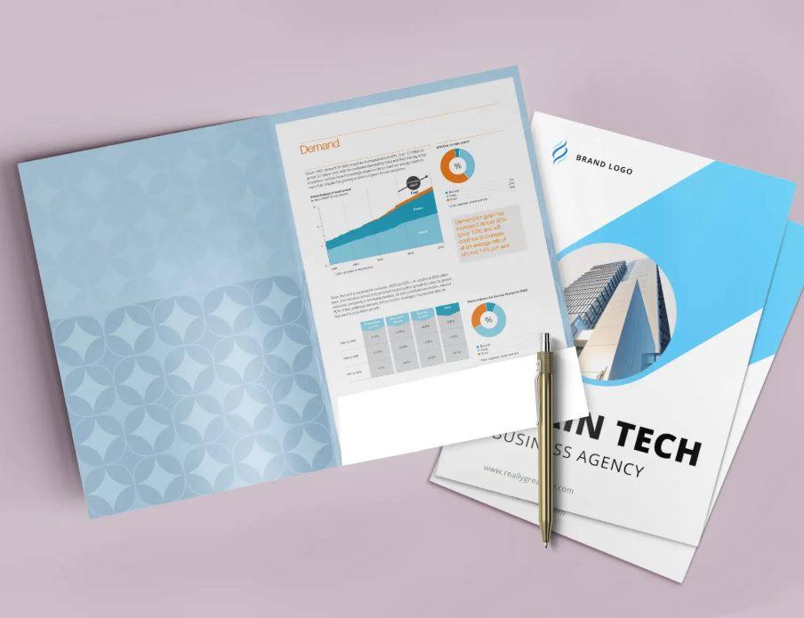
Pastas
08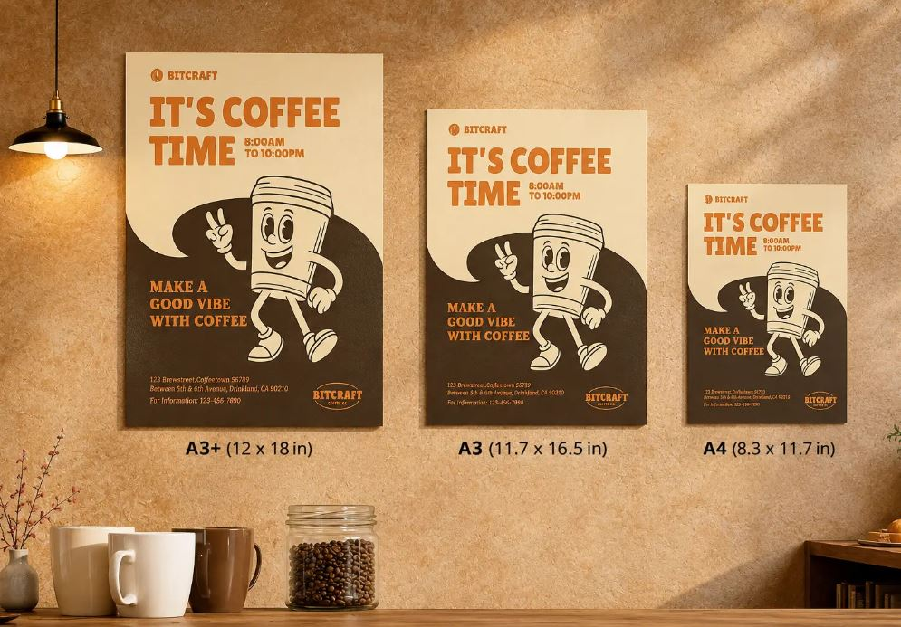
Pôsteres
09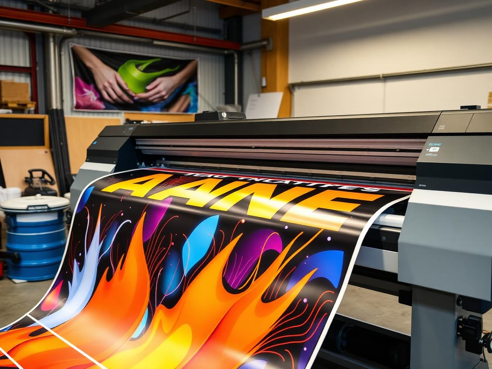
Grande formato
10O que você imaginou, impresso do jeito que pensou.
Mande seu arquivo ou sua ideia. A gente cuida do resto, da cor ao acabamento, dentro do prazo combinado.
Pedir orçamento pelo WhatsApp